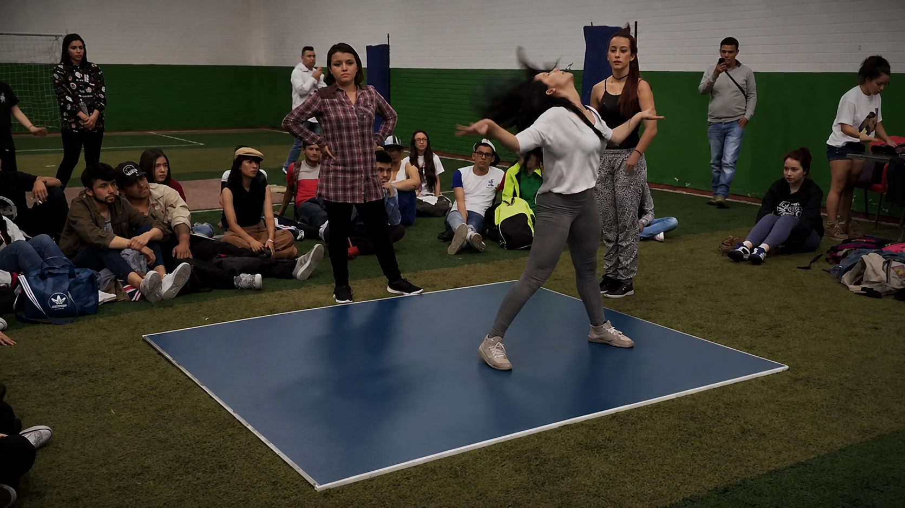

Conciencia corporal
Reconoce respiración, peso, apoyos y alineación para comprender mejor el cuerpo y moverte con seguridad.
Explora nuevas posibilidades de movimiento y desarrolla conciencia corporal, fluidez, creatividad e interpretación mediante una experiencia sensible y expresiva.

El proceso comienza con conciencia corporal, respiración, peso, espacio y cambios de nivel, avanzando progresivamente hacia secuencias fluidas y exploraciones de movimiento.
La formación busca que cada estudiante reconozca su cuerpo como una herramienta de expresión, fortalezca su creatividad y construya una relación más libre y consciente con el movimiento.
Una formación sensible que combina conciencia corporal, fluidez, creatividad e interpretación del movimiento.
Reconoce respiración, peso, apoyos y alineación para comprender mejor el cuerpo y moverte con seguridad.
Explora cambios de nivel, direcciones y transiciones para construir movimientos continuos y orgánicos.
Descubre nuevas posibilidades mediante ejercicios guiados que fortalecen imaginación y autonomía corporal.
Conecta emociones, intención y música para comunicar ideas y sensaciones a través del movimiento.
Cada clase propone herramientas técnicas y creativas que evolucionan de acuerdo con el proceso del grupo.
El movimiento se trabaja con atención a sensaciones, respiración y posibilidades individuales.
La improvisación fortalece imaginación, confianza y una forma propia de habitar el movimiento.
La formación puede complementarse con espacios para compartir creaciones y mostrar el proceso artístico.
Este curso está pensado para niños y jóvenes interesados en comenzar o fortalecer su proceso de danza contemporánea, desarrollar conciencia corporal y descubrir nuevas formas de crear, interpretar y expresarse.
Encuentra otro estilo de movimiento y expresión que también conecte contigo.
Agenda una clase gratuita y conoce personalmente la experiencia KIRU.